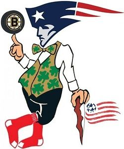
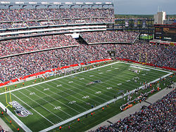
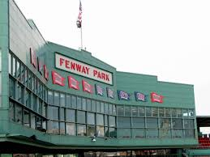

New England
Sports
Ice Hockey, Baseball, Soccer, Football, Basketball
 The Boston Bruins are a professional ice hockey team based in Boston, Massachusetts. They are members of the Atlantic Division of the Eastern Conference of the National Hockey League (NHL). The team has been in existence since 1924, and is the League's third-oldest team and is the oldest in the United States. The New England Patriots are a professional American football team based in the Greater Boston area. The Patriots compete in the National Football League (NFL) as a member of the American Football Conference (AFC) East division. The team plays its home games at Gillette Stadium in the town of Foxborough, Massachusetts, which is located 21 miles (34 km) south-west of down-town Boston and 20 miles (32 km) north-east of down-town Providence, Rhode Island. The Patriots are also head-quartered at Gillette Stadium. The Boston Red Sox are an American professional baseball team based in Boston, Massachusetts, that competes in Major League Baseball (MLB). They are members of the East division of the American League (AL). The Red Sox have won eight World Series championships, having appeared in 12. Founded in 1901 as one of the American League's eight charter franchises. The New England Revolution is an American professional soccer club based in the Greater Boston area that competes in Major League Soccer (MLS), in the Eastern Conference of the league. It is one of the ten charter clubs of MLS, having competed in the league since its inception. The Boston Celtics are an American professional basketball team based in Boston, Massachusetts. They play in the Atlantic Division of the Eastern Conference in the National Basketball Association (NBA). Founded in 1946 and one of eight NBA teams (out of 23 total teams) to survive the league's first decade, the team is currently owned by Boston Basketball Partners LLC. The Celtics play their home games at the TD Garden, which they share with the National Hockey League (NHL)'s Boston Bruins.
Stadiums
TD Garden, Gillete Stadium, Fenway Park

 Gillette Stadium is a stadium located in Foxborough, Massachusetts, United States, 21 miles (34 km) southwest of downtown Boston and 20 miles (32 km) from downtown Providence, Rhode Island. It serves as the home stadium and administrative offices for both the NFL's New England Patriots football franchise and MLS's New England Revolution soccer team. In 2012, it also became the home stadium for the football program of the University of Massachusetts (UMass), making it the largest football stadium in the Mid-American Conference. Fenway Park is a baseball park located in Boston, Massachusetts, at 4 Yawkey Way near Kenmore Square. Since 1912, it has been the home of the Boston Red Sox, the city's Major League Baseball (MLB) franchise. It is the oldest and most historic ballpark in MLB. TD Garden is the home arena for the Boston Bruins of the National Hockey League and Boston Celtics of the National Basketball Association. It is owned by Delaware North, whose CEO, Jeremy Jacobs, also owns the Bruins. It is the site of the annual Beanpot college hockey tournament, and hosts the annual Hockey East Championships.
| Sport | Name | Year Founded | Number of Championships | Notable Names |
|---|---|---|---|---|
| Ice Hockey | Boston Bruins | 1924 | Six (1928, 1938, 1940, 1969, 1971, 2010) | Bobby Orr, Raymond Borque, Phil Esposito, Cam Neely |
| Football | New England Patriots | 1971 | Four (2001, 2003, 2004, 2014 | Bill Belichick, Tom Brady, Jim Nance, Tedy Bruschi |
| Baseball | Boston Red Sox | 1901 | Eight (1903, 1912, 1915, 1916, 1918, 2004, 2007, 2013) | Wade Boggs, Joe Cronin, Pedro Martinez,Ted Williams |
| Soccer | New England Revolution | 1995 | None | Shalrie Joseph, Taylow Twellman, Matt Reis |
| Basketball | Boston Celtics | 1946 | Seventeen (1957, 1959, 1960, 1961, 1962, 1963, 1964, 1965, 1968, 1969, 1976, 1981, 1984, 1985, 1986, 1987, 2008, 2010) | Bill Russell, Larry Bird, Kevin Garnett, Paul Pierce |